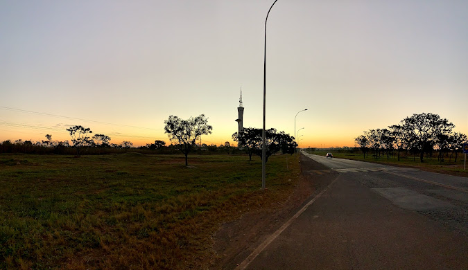
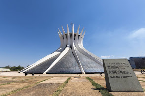

Passeio turístico tem ampla oferta
É residência oficial do Presidente da República. É o primeiro prédio de alvenaria de Brasília. Foi projetado por Oscar Niemeyer.

TORRE DIGITAL
A Torre de TV Digital é o mais jovem ponto turístico de Brasílias e foi reaberto em 2015. O projeto de 182 metros de altura, sendo 120 metros de concreto. É o último projeto de Oscar Niemeyer.
PALÁCIO DO PLANALTO
O Palácio do Planalto é a sede do Poder Executivo Federal, local de trabalho do Presidente da República. Obra projetada pelo arquiteto Oscar Niemeyer.

O Museu Nacional da República é um museu criado e administrado pelo governo do Distrito Federal. O museu e a Biblioteca Nacional de Brasília formam o Complexo Cultural da República João Herculino.

MUSEU DOS POVOS INDIGENAS
O Museu dos Povos Indígenas, é um centro cultural e instituição de pesquisa dedicado á cultura indigena do Brasil, situado no Eixo Monumental, próximo da Praça do Buriti.


O Memorial JK é um museu, mausoléu e centro cultural brasileiro construído para homenagear o 21º Presidente do Brasil, Judcelino Kubitschek de Oliveira. Está localizado no canteiro central do Eixo Monumental em Brasília.

CATEDRAL DE BRASÍLIA
Projetada por Oscar Niemeyer, foi o primeiro monumento a ser criado. Sua pedra fundamental foi lançada em 12 de setembra de 1958.
PARQUE NACIONAL
O Parque Nacional de Brasília, também conhecido como Água Mineral, é uma unidade de conservação brasileira de proteção integral á natureza. Fica situado na parte noroeste do Distrito Federal. É um dos parques mais visitados do país.